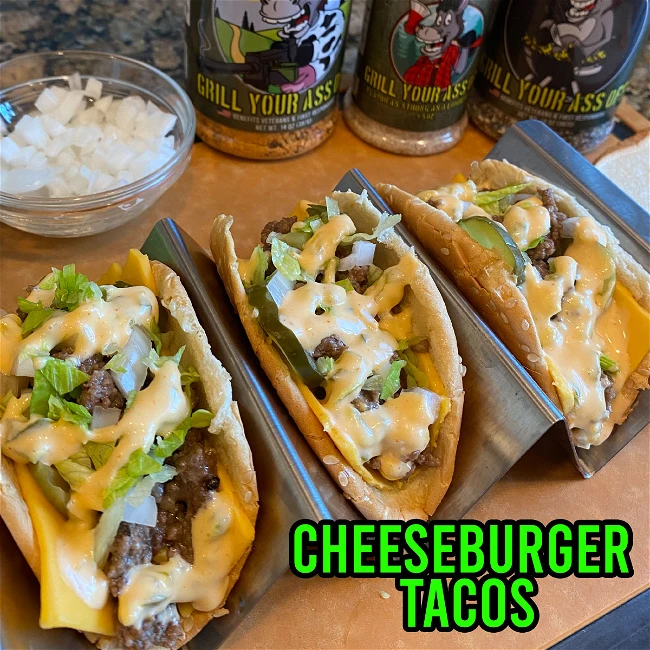

Cheesburger Tacos

Combining two favorites - what could go wrong?
Ingredients
- 2 pounds of beef chop meat
- 1 full Romaine lettuce
- Ketchup
- Mayonnaise
- French dressing
- Sweet relish
- White vinegar
- Sugar
- Salt
- Burger buns
- Onions
- Pickle slices
- Shredded Mexican cheese mix (Cheddar cheese will work also)
- American cheese slices
- Ma Deuce Steak Seasoning
- Standard Issue Salt & Pepper
- Alder Smoked Sea Salt
Steps
-
Add all these next ingredients into a bowl and mix thoroughly
- 4 teaspoons sweet relish
- 1 tablespoon finely minced white onion
- 1 teaspoon white vinegar
- 1 teaspoon granulated sugar
- 1/8 teaspoon salt
- 1/2 cup Mayo
- 2 tablespoons French dressing
- When the secret sauce is mixed place in the refrigerator
- Dice up the Romaine lettuce into tiny pieces
- Dice up your onion into small squares
- Place your onions and lettuce to the side until the end
- Unpack your chop meat and place in a skillet over medium heat
- Season the beef with Ma Deuce Steak Seasoning
- Season the beef with Standard Issue Salt & Pepper
- While the beef is cooking separate your burger buns
- With a rolling pin flatten each burger bun both sides separately
- Place the flatten burger tops in a taco rack
- Once the buns are in the rack layer 1 slice of American cheese per taco shell
- Add a few sliced pickles on top of the American cheese
- Keep stirring your beef as it cooks (Salt the chop meat with Alder Wood Smoked Sea Salt to taste)
- Sprinkle the shredded cheese on top of the chop meat and stir until it’s completely melted
- Once the chop meat is cooked add a spoonful to each taco shell
- Sprinkle the onion and lettuce on each taco on top of the meat
- Drizzle your secret sauce on top of each taco!
https://grillyourassoff.com/blogs/recipes/cheeseburger-tacos